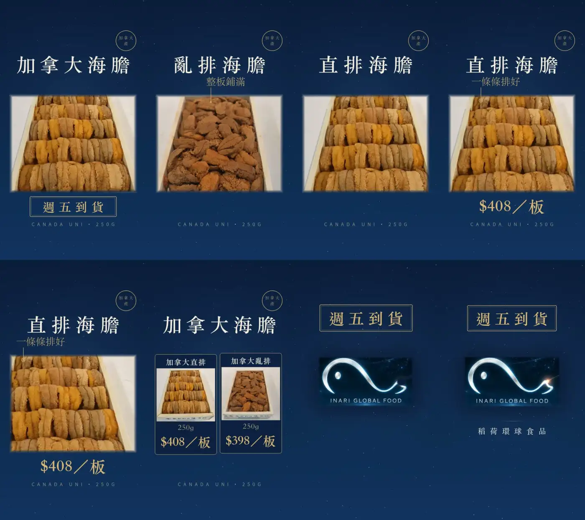

21
21 版點樣一步步改
成品係 23 秒直片（1080x1920）。下面係主要版本同老闆原句；冇記錄原句嘅版本唔列。
| 版本 | 改咗乜 | 老闆話 |
|---|---|---|
| v1 | 8 秒內風格試片 | 先揀方向，唔做全片 |
| v4 | 鏡頭推近、加拍點 | 「效果太平淡」 |
| v6→v7 | v6 米白底；v7 換星空品牌風、加 logo 同音樂 | 「顏色風格太平淡，欠缺品牌元素」 |
| v8 | 加牽海膽美女角色 | 品牌 IP 上場 |
| v9–v10 | 換音樂；文案做主角，無聲版驗證節奏 | 「音樂唔得，重點不是海膽特效而是文案」 |
| v12 | 貼圖＋故事 A「師傅問貨」 | 「用海膽美女貼圖及海膽貼圖風格，加小故事文案」 |
| v16 | 柔和背景；MiniMax 配音 | 「背景改柔和顏色、可用 MiniMax 配音、師傅日本人講日文」 |
| v18 | 日本壽司吧背景；對白全改日文 | 「日本風格、專業認真師傅問星期六日有冇推介海膽」 |
| v19 | 背景改豐洲魚市場；新貼圖 | 「背景是豐洲魚市場有稻荷 logo、表情動作要配合劇情」 |
| v20 | 建 STYLE_BIBLE，貼圖統一重出 | 「風格色調不夠統一」 |
| v21 | 改手繪木招牌 | 「稻荷 logo 不搭」；終版 1 ok |
1
先出 8 秒試片揀方向
- 起始指示係 8 秒以內嘅風格試片（v1 約 7.9 秒），唔好一開頭就做全片。
- v4：老闆話「效果太平淡」，改成鏡頭推近、加拍點。
- v6 仲係米白底，老闆話「顏色風格太平淡，欠缺品牌元素」；v7 先換成星空品牌風，加 logo、金色圓章同音樂。
- 一句意見收窄一步，試片幾秒就睇到方向啱唔啱。

2
文案先係主角
- v9：老闆話「音樂唔得，重點不是海膽特效而是文案」。
- v10 做 kinetic typography 無聲版，先驗證文案節奏。
- v12：老闆要「海膽美女貼圖及海膽貼圖風格，加小故事文案」，揀咗故事 A「師傅問貨」：日本師傅問貨，美女店員介紹，海膽仔蓋印「週五到貨」。
- 特效可以後補，故事冇力，特效救唔返。
3
STYLE_BIBLE：8 條畫風規則
- v20：老闆話「風格色調不夠統一」。原因係素材分批出圖，風格一定唔一致。
- 所以建一份 STYLE_BIBLE，girl3、chef3、urchin3 按佢統一重出。
- 8 條重點：①柔和日系繪本水彩 ②線條深啡 #4A3426 ③左上暖光 ④色溫約 5000K ⑤限定色板 ⑥中低飽和 ⑦統一紙感同白邊 ⑧真海膽相唔調色。
- 綠幕只作抠圖底色，人物身上唔准有綠。
4
背景先出，貼圖跟背景
- 背景先用 Codex 出圖：豐洲魚市場、中間留空、招牌留白、畫面唔出字。
- 之後出角色貼圖表（綠幕＋白邊），參考圖 1 係角色身份，參考圖 2 係背景風格，咁畫風先跟得住。
- 去綠幕、despill、加白邊同柔影；真海膽相（直排、亂排）去背做貼圖，唔調色。
- v21：老闆話「稻荷 logo 不搭」。寫實 logo 直貼插畫背景唔夾，改成單色手繪木招牌，logo 形狀唔改。
- 提示詞要短，太長會被當成網絡錯誤。
5
日文配音流程
- v16 起加人聲，MiniMax TTS 配音；v18 老闆要日本風格、師傅講日文，對白全改日文，共 5 句。
- 揀聲線：師傅、美女、海膽仔各一把。
- 同一句每次停頓長短差好遠，要出多個 take 揀。
- 處理：剪頭尾靜音、loudnorm 約 -16 LUFS、48kHz mono。
- 未人耳試聽就唔好當定案。
6
音樂節拍同 Python 合成
- 音樂用 Mixkit 免費授權嘅 Golden Storm，用之前逐條讀片頁授權。
- 用 librosa 量到 127BPM，剪一個樂句；人聲位置 ducking -12 dB，尾淡出 0.5 秒。
- 合成全部用 Python：PIL 逐幀渲染、numpy 混音、ffmpeg 編碼。時間表以「拍」做單位，所有切點對齊拍子。
- 規格：1080x1920、30fps、響度約 -14 LUFS；文字守左右邊距 64px，重要內容喺 y≤1400，避開平台底部介面。
- 腳本有邊距掃描功能，專門查文字有冇超出邊距。
7
審片同交付
- 交畀老闆前，先有導演角色審片：量首句時長、人聲對音樂差、安全區、鉤子、結尾。
- 審片抓過嘅位：缺加拿大產地、價錢字比標籤細、價錢同角色入咗底部介面。
- v21 老闆回「1 ok」；「週五到貨」文案唔改。成片 23 秒。
- 封面由成片抽格；改咗成片要同步換封面、文案同 md5，唔係舊發佈包會過期。
12
12 條教訓
- 素材分批出圖風格一定唔統一：先定 STYLE_BIBLE，背景先出，角色圖以背景做參考圖。
- 動作要逐句對應劇情先設計，泛用表情貼圖會令畫面怪。
- 第一個方向未必啱：先用 8 秒以內試片，逐步收窄，唔好直接做全片。
- 重點係文案，唔係特效。
- 品牌 logo 寫實圖直貼插畫背景唔夾，要改單色手繪版，但 logo 形狀唔准改。
- 導演審話「大粒」係品質宣稱，但係老闆原文，以老闆為準。
- 安全區：價錢同角色避開底部平台介面，文字守左右 64px。
- 配音未人耳試聽就唔好當定案，同一輸入多出幾個 take 揀。
- 免費音樂要讀實際授權頁，Mixkit 免費版有限制。
- 量度要實測，唔好用腳本參數推算就當量過。
- 發佈包出完先改文案，舊包會過期：改成片要同步換封面、文案、md5。
- 生成素材要親眼睇，唔好靠檔名。
一句講晒
一句意見，收窄一步。
常見問題
要識寫程式嗎？
合成部分用 Python，但前面揀方向、寫文案、定畫風、出圖都唔使寫程式。
點解一條 23 秒嘅片要改 21 版？
因為老闆逐步收窄意見：先係「太平淡」，跟住係「欠缺品牌元素」，再到「重點係文案」「風格不統一」「logo 不搭」。每次改一個位，所以版本多，但方向愈改愈準。
音樂可以用邊度揀？
今次用 Mixkit 免費授權嘅 Golden Storm。用之前要逐條讀實際授權頁，Mixkit 免費版有限制。